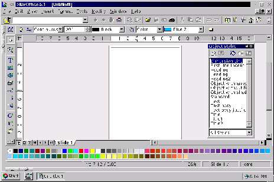

Next: Importancia de los gráficos
Up: StarOffice
Previous: StarImpress: Creador y Visualizador
Índice General
Figura 5.42:
El creador de ilustraciones de StarOffice
|

|
Subsecciones
Proyecto Cursos - LuCAS - http://lucas.hispalinux.es/htmls/cursos.html